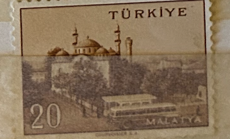
| SOURCE | TITLE| IMAGE MATCH | click to source page |
| kitantik | Mektup Zarfından Kesilmiş / Postadan Geçmiş Pul Filateli - TÜRKİYE MALATYA , 5 PARA - Türkiye Cumhuriyeti - Efemera - kitantik | #16802406009191 | 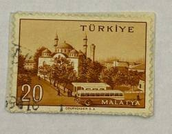 |
| TouchStamps | Stamp: Malatya (Turkey 1959) - TouchStamps | 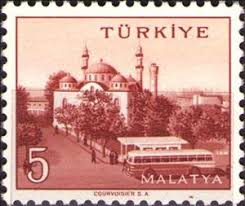 |
| Dreamstime.com | 451 Turkish Malatya Stock Photos - Free & Royalty-Free Stock Photos from Dreamstime | 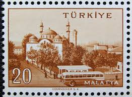 |
| kitantik | Efemera - Mektup Zarfından Kesilmiş / Postadan Geçmiş Pul Filateli - Damgalı - MALATYA, 20 PARA - Türkiye Cumhuriyeti - Turkish Stamp - | 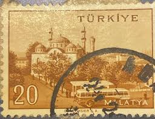 |
| Shutterstock | Istanbul Turkey December 25 2020 Turkish Stock Photo 2585191559 | Shutterstock | 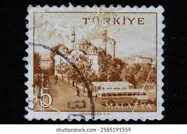 |
| kitantik | Büyük Memleket Serisi: Malatya - Efemera - kitantik | #002171290144 | 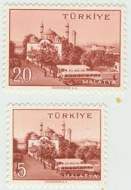 |
| torob.com | خرید و قیمت تمبرقدیمی و زیبای ترکیه باشارنیه مطابق تصویر | ترب | 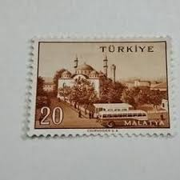 |
| Gidivermek | Dünyadan Kopar Gibi... - Gidivermek | 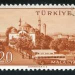 |
| e8ht° (@e8htarchive) • Instagram photos and videos | 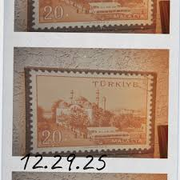 | |
| kitantik | Mektup Zarfından Kesilmiş / Postadan Geçmiş Pul Filateli - Damgalı - MALATYA, 5 PARA - Türkiye Cumhuriyeti - Efemera - kitantik | #16802406008984 | 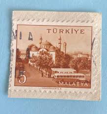 |
| postbeeld.com | Stamp 1971, Türkiye Turkey/Iran/Pakistan 3v, 1971 - Collecting Stamps - PostBeeld - Online Stamp Shop - Collecting | 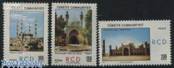 |
| defence.pk | Regional Cooperation and Development (RCD) a Bygone Era. | Pakistan Defence | 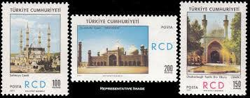 |
| Blogger.com | A Journey of Postcards: Selimiye Mosque and Uzunköprü bridge | Turkey | 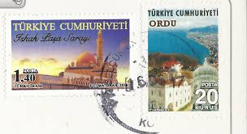 |
| eBay | Turkey 1960 Manisa Mesir Bairam MNH** COMPLETE SET SG #1899/1902 | eBay | 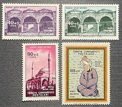 |
| eBay UK | 7 Stamps Mint Never Hinged/MNH Stamps for sale | eBay UK | 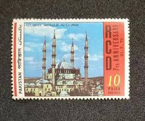 |
| Blogger.com | Spur Acurol-N revisited | The Online Darkroom | 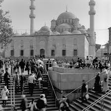 |
| BalkanPhila | 1925 Syria Selimiye Mosque to Austria – BalkanPhila | 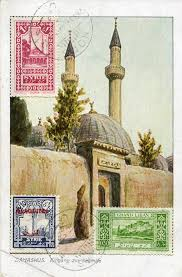 |
| TouchStamps | Stamp: Bolu (Turkey 1958) - TouchStamps | 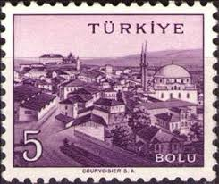 |
| What is the history of the New Mosque stamp picture? | 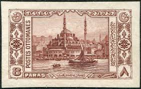 | |
| stu1967 | 2023 SET MOSQUES OF TURKEY 2v FINE USED | 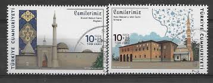 |
| Colnect | Stamp: Khaled ibn al-Walid Mosque at Homs (Syria(Old Buildings) Mi:SY 1056,Sn:SY C432,Yt:SY PA354,Sg:SY 1029 📮 | 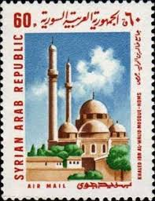 |
| Etsy | Vintage Bursa Turkey Tourism Poster A3 Print - Etsy Israel | |
| HipStamp | Browse Listings / HipStamp | 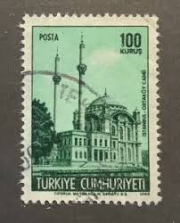 |
| Shutterstock | 6+ Hundred Turkish Ptt Royalty-Free Images, Stock Photos & Pictures | Shutterstock | 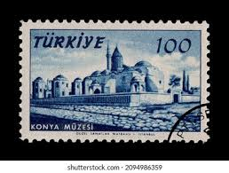 |
| eBay | Turkish Cyprus:full set 4 mint stamps-overprint, architecture, 1977, Mi#46-9 MNH | eBay | 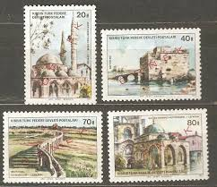 |
| TouchStamps | Stamp: Nevşehir (Turkey 1960) - TouchStamps | 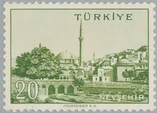 |
| Benim Koleksiyonum | 1958/1960 Country Series City Stamp: Istanbul Quadruple Block Stamp | 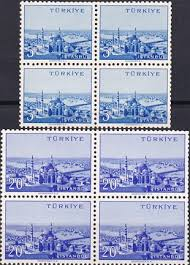 |
| Colnect | Türkiye (Turkey): Ortakoy Mosque, Istanbul, 1969 : US$ 1.18 from filatelistanbul : Stamps Marketplace : Stamps for sale : Colnect | 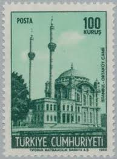 |
| Colnect | Stamp: Mosque of Fatih in Istanbul (Türkiye (Turkey)(Conquest of Constantinople, 500th Anniversary) Mi:TR 1354,Sn:TR 1096,Yt:TR 1181,Sg:TR 1510 📮 | 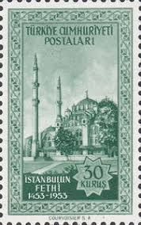 |
| Shutterstock | 78 Bursa Stamp Royalty-Free Images, Stock Photos & Pictures | Shutterstock | 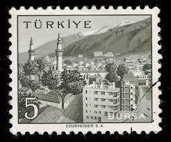 |
| Fine Art America | Best Minarets - Islamic Architecture, Islamic Architecture - Mosque, a mosque, ancient, architecture #1 Painting by Celestial Images - Fine Art America | |
| eBay | VINTAGE POSTCARD 1955 SENT FROM ISTANBUL TURKEY TO RAMAT GAN ISRAEL MOSQUE | eBay | 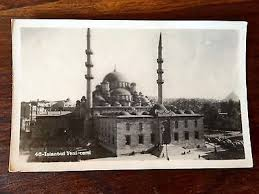 |
| TouchStamps | Stamp: Istanbul (Turkey 1959) - TouchStamps | 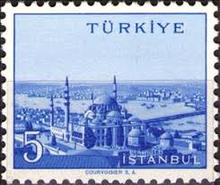 |
| eBay | CYPRUS - TURKISH 1980, RELIGION, ISLAMIC CONFERENCE Sc 80-82, LOT OF 2 SETS, MNH | eBay | 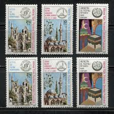 |
| Postal service among the Ottomans - TASTE OF THE PAST | 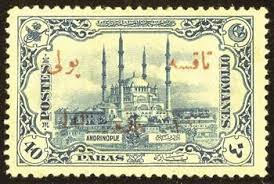 | |
| eBay | TURKEY ISHAK PASHA PALACE POSTMARKED ISTANBUL 2016 LARGE FIRST DAY COVER MINT | eBay | 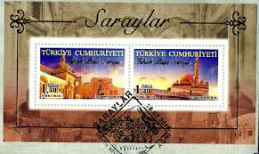 |
| Osta | Türgi " HOONE " 1969 (247811254) - Osta.ee | 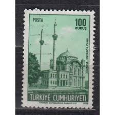 |
| Colnect | Stamp: Hagia Sophia & Minaret of the Sultanahmet Mosque, Istanbul (Türkiye (Turkey)(UNESCO Campaign for Istanbul and Goreme) Mi:TR 2663,Sn:TR 2271,Yt:TR 2421,Sg:TR 2850 📮 | 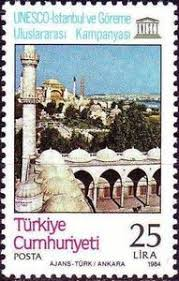 |
| Shutterstock | turkish Postage Stamp": Over 4,502 Royalty-Free Licensable Stock Photos | Shutterstock | 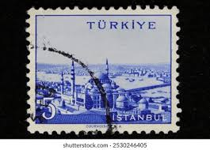 |
| Postage stamp from Turkey depicting Ortakoy Mosque in Istanbul Stock Photo - Alamy | 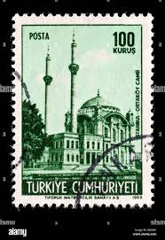 | |
| Shutterstock | Ankara Türkiye 9 September 2021 Republic Stock Photo 2038739579 | Shutterstock | 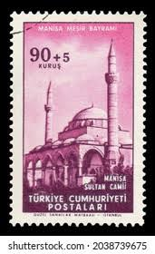 |
| eBay | BAHAWALPUR O5 MINT NEVER HINGED OG** NO FAULTS VERY FINE! HRL | eBay | 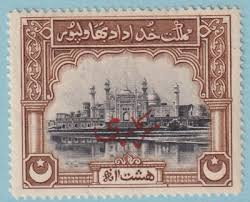 |
| HipStamp | Turkish Republic of Northern Cyprus 80 - 82 MNH | Europe - Turkey, General Issue Stamp / HipStamp | 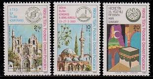 |
| Shutterstock | Letters Byzantine: Over 434 Royalty-Free Licensable Stock Photos | Shutterstock | 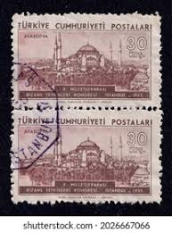 |
| Free stamp catalogue | Stamps from Türkiye - Freestampcatalogue.com - The free online stampcatalogue with over 500.000 stamps listed. | 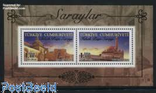 |
| Blogger.com | Big Blue 1840-1940: Turkey | 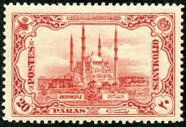 |
| TouchStamps | Stamp: Bursa (Turkey 1958) - TouchStamps | 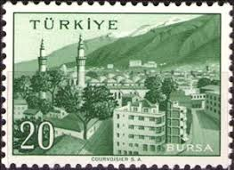 |
| 123RF | TURKEY - CIRCA 1959: Stamp Printed By Turkey, Shows Turkish City, Mardin, Circa 1959. Stock Photo, Picture and Royalty Free Image. Image 12594349. | 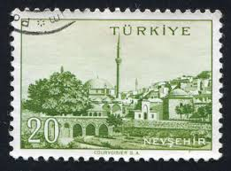 |
| pixels.com | Istanbul X Greeting Card by Mikel Bilbao Gorostiaga | |
| globalcoinsandstamps.com | Turkey – Global Coins and Stamps | 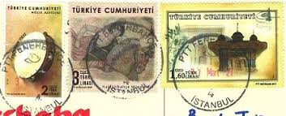 |
| eBay | Turkey Cyprus 1980 year , mint MNH (**) Architecture | eBay | 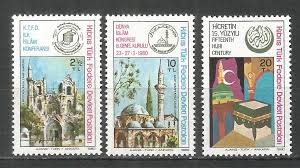 |
| Bridgeman Images | Image of Postage stamp depicting Doner Kumbet tomb in Kayseri, folk music | 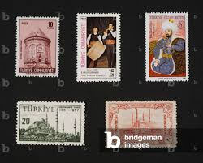 |
| HipStamp | Turkey 1384 MNH BIN $0.25 | Europe - Turkey, General Issue Stamp / HipStamp | |
| Flickr | Yuguo Zou | Flickr | |
| Granger Art on Demand | Suleymaniye Mosque #3 by Granger | |
| Redbubble | Iraqi Stamp, 1923" Sticker for Sale by rogerstrawberry | Redbubble | |
| Shutterstock | Turkey Circa 1913 Stamp Printed Turkey Stock Photo 154812032 | Shutterstock | |
| Shutterstock | 60 Edirne Stamp Royalty-Free Images, Stock Photos & Pictures | Shutterstock | |
| Shutterstock | 26+ Thousand Livre Turque Royalty-Free Images, Stock Photos & Pictures | Shutterstock |